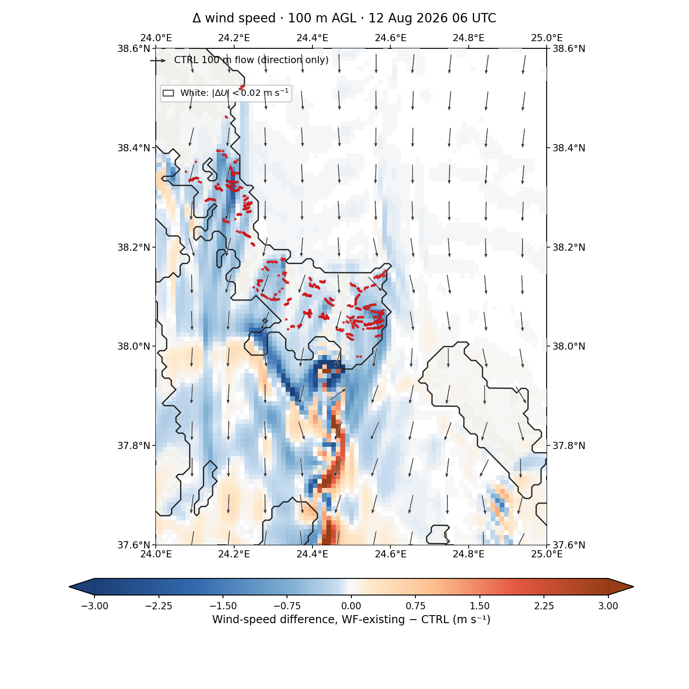

About the study
This study examines how existing wind farms modify the local atmospheric flow over southern Evia during a five-day Etesian event in August 2026.
Two paired Weather Research and Forecasting (WRF) simulations are compared: a control simulation and a simulation representing the existing wind farms. Their common forcing allows the wind-farm signal to be examined through matched differences in space and time.

Current focus
The first published figure set contains instantaneous wind-speed differences at 10, 50, 100, 200 and 250 m AGL. Fields are sampled every six hours at 00, 06, 12 and 18 UTC. Each map also shows the corresponding CTRL wind direction.
Research context
The work is being carried out by Stella Sigala at the Laboratory of Atmospheric Physics, Department of Physics, University of Patras.